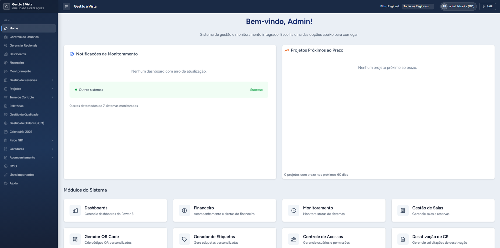
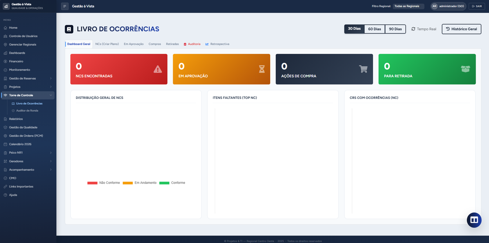
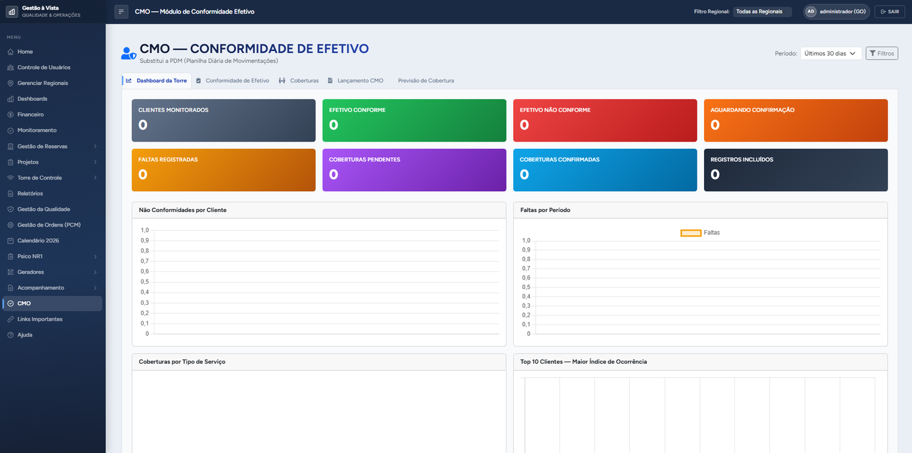
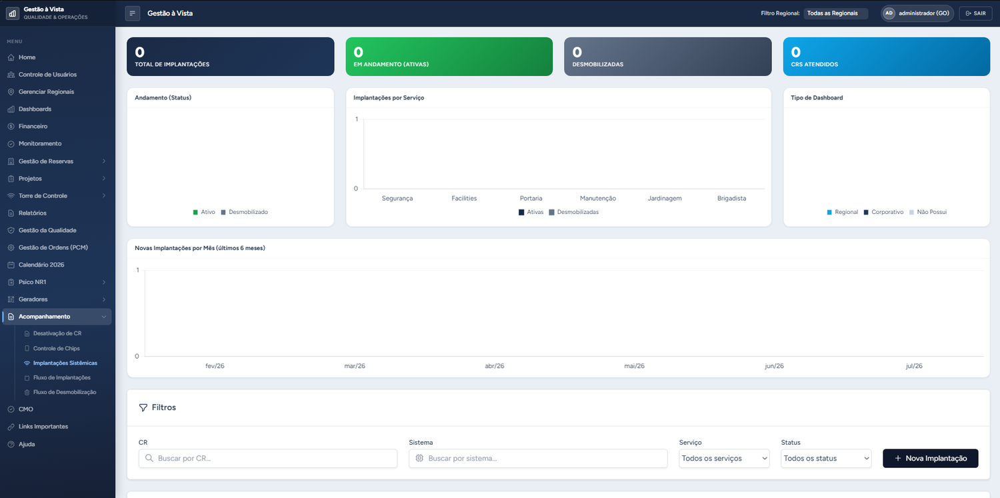
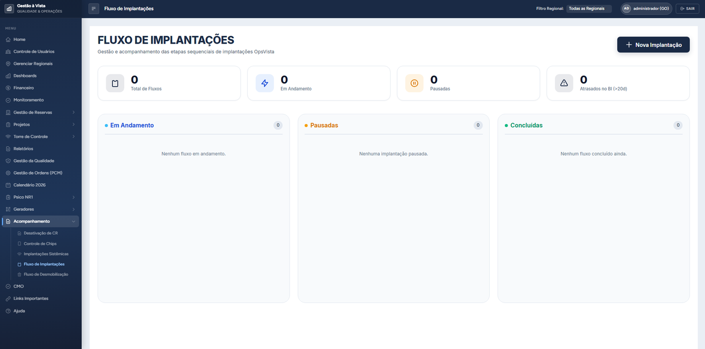

Sistemas Web
Plataformas Django completas: multi-tenant, controle de acesso por papel, relatórios, dashboards e PWA. Do banco ao Nginx.
Sou Daniel Augusto, desenvolvedor full-stack e de automação. Construo plataformas web, robôs de RPA, integrações de pagamento e ferramentas de infraestrutura — do rascunho ao deploy em produção. Alguns dos meus sistemas rodam hoje em escala nacional.
Sistemas e automações entregues para
Plataformas Django completas: multi-tenant, controle de acesso por papel, relatórios, dashboards e PWA. Do banco ao Nginx.
Robôs que baixam faturas, geram documentos e alimentam sistemas. Contorno de anti-bot, extensões de navegador e integrações de pagamento (PIX).
VPS, túneis SSH auto-reconectáveis, Docker, Nginx e CI. Ferramentas de console que a equipe usa com dois cliques.
Unity/C# e Roblox/Luau: arquitetura MMO server-authoritative, sistemas de inventário, netcode e integração jogo ↔ backend.
Abaixo, os sistemas de verdade: as telas, as empresas para quem foram feitos e como resolvi o problema de cada uma.
O sistema operacional de uma das maiores empresas de facilities do Brasil — hoje usado pelas regionais do país inteiro.





A operação vivia em papel, planilhas e grupos de WhatsApp: livro de ocorrências manual, rondas sem evidência, indicadores montados à mão no fim do mês. Cada regional fazia do seu jeito e o corporativo não enxergava nada em tempo real.
Um único sistema web com permissão por página e por papel, que digitalizou fluxo a fluxo. Começou em uma regional; deu resultado e o corporativo adotou como padrão nacional. Essa virada de escala guiou a decisão de arquitetura mais importante: roteamento multi-banco — cada regional com seu próprio PostgreSQL, escolhido em runtime pelo Django.
Mais de 40 módulos em produção: Torre de Controle (livro de ocorrências com trilha de auditoria por hash encadeado), Livro Ata com QR Code + WhatsApp, avaliação psicossocial NR-01 (feita para a ISA CTEEP), gestão da qualidade, CMO de efetivo e o módulo de manutenção da Edibra. Instalável como app no celular do supervisor em campo.
Problema: a área jurídica se afogava em e-mails desestruturados, prazos perdidos e documentos espalhados — sem rastreabilidade para auditoria e compliance.
Solução: uma plataforma de governança contratual com chamados inteligentes (campos, anexos e aprovadores mudam conforme a norma e a criticidade), timeline colaborativa por demanda, gestão de SLA e uma IA — a Lexia — que lê contratos em PDF/DOCX e resume as tratativas.
Problema: cada posto de operação precisa de uma etiqueta com QR Code para o supervisor registrar o turno no local — e eram centenas, montadas manualmente.
Solução: um app desktop que consulta a árvore de locais no PostgreSQL (CTE recursiva), monta um PDF com 16 etiquetas por página A4 a 300 DPI, com preview em tempo real e logo do cliente posicionável por drag & drop. Distribuído como .exe.
● TÚNEL ATIVO base → VPS:5433 conexões ativas 3 total 128 watchdog keepalive 45s · timeout 15s ↻ reconectar em 12s (backoff) ✓ banco respondendo · latência VPN eliminada
Problema: o sistema web rodava na VPS, mas o banco ficava na rede interna atrás de VPN. A latência deixava o site arrastado a ponto de atrapalhar a operação.
Solução: um túnel SSH reverso ligando o banco on-premise à VPS, com reconexão automática, watchdog que detecta queda silenciosa (não só o keepalive), backoff exponencial e um painel de status para a equipe. A latência de VPN saiu do caminho das queries.
Problema: baixar todo mês as faturas de energia de dezenas de unidades consumidoras, uma a uma, e digitar valor, vencimento e consumo à mão.
Solução: um robô que baixa o PDF completo de cada UC e extrai os dados para uma planilha. O portal fica atrás de um WAF Imperva que barra automação headless — mapeei isso e virei a estratégia para uma extensão de navegador (Manifest V3) que roda dentro do Chrome real do operador, depois do login. Engenharia honesta: entendi o bloqueio e desenhei em cima dele.
Problema: uma imobiliária gera dezenas de contratos, propostas e recibos por semana — sempre os mesmos modelos, preenchidos manualmente, sujeitos a erro e retrabalho.
Solução: uma automação que recebe os dados do imóvel e das partes e monta o documento final padronizado, pronto para assinatura — cortando o trabalho manual e padronizando a saída. Dados sensíveis (CPF e afins) tratados com cuidado.
Problema: vender itens digitais e liberar acesso sem ninguém conferir pagamento e entregar na mão, 24/7.
Solução: um bot que gera cobrança PIX (Mercado Pago) com centavos aleatórios — cada valor vira único, então a confirmação é automática (webhook + polling de segurança) e idempotente: nunca entrega duas vezes nem sem o valor exato. Ao pagar, entrega o cargo no Discord e o item dentro do Roblox via script Luau autenticado.
Além dos sistemas de empresa, desenvolvo jogos e ferramentas de jogo — com foco em arquitetura correta: servidor com autoridade, validação anti-cheat no back-end e netcode.
Arquitetura MMO server-authoritative: sistema de troca seguro, validação de inventário no servidor e máquinas de estado de IA.
GitHub ↗Controlador de movimento 3D em primeira pessoa: corrida, pulo, controle de câmera e travamento de cursor.
GitHub ↗Sistema de inventário em três camadas: detecção de item, interação/coleta e gerenciamento do inventário.
GitHub ↗Fiz muita coisa e estou disposto a participar de muito mais. Alguns caminhos por onde a gente pode começar:
Plataformas web completas para a sua operação — do banco de dados ao deploy em produção.
Robôs que eliminam tarefas repetitivas: faturas, documentos, cadastros, integrações entre sistemas.
PIX, cobrança automática, confirmação idempotente e entrega de produto sem intervenção manual.
Subir, estabilizar e monitorar sua aplicação em VPS: Nginx, Docker, túneis e continuidade.
Contratos, relatórios e etiquetas gerados automaticamente a partir dos seus dados.
Unity/C# e Roblox/Luau: mecânicas, netcode server-authoritative e integrações jogo ↔ backend.
Meu trabalho quase sempre começa igual: alguém tem um processo que dói. Uma planilha que ninguém aguenta mais, uma fatura baixada na mão toda semana, um sistema lento por causa de VPN. Eu entro, entendo o fluxo de verdade e devolvo algo que roda sozinho.
Já levei um sistema de uma regional até a escala nacional, mapeei um WAF para desenhar a automação certa em cima dele, e migrei bases legadas sem parar a operação. Não fujo da parte chata — deploy, banco, o caso de borda que só aparece em produção. É ali que o problema realmente termina.
Estou sempre disposto a entrar em coisas novas. Se você tem um problema técnico interessante, provavelmente eu vou querer ouvir.
Vamos conversarRespondo rápido. Pode mandar por e-mail ou chamar direto no WhatsApp — o que for melhor pra você.